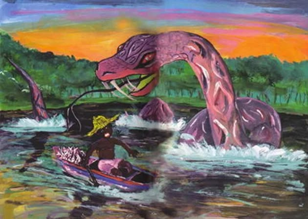
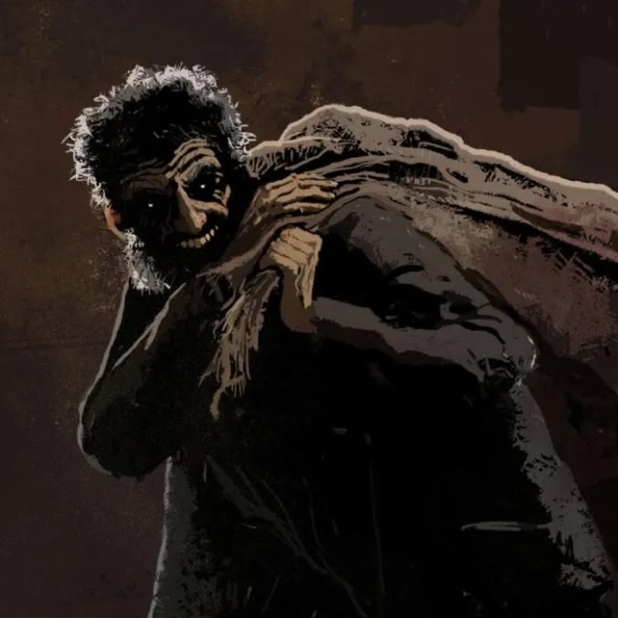
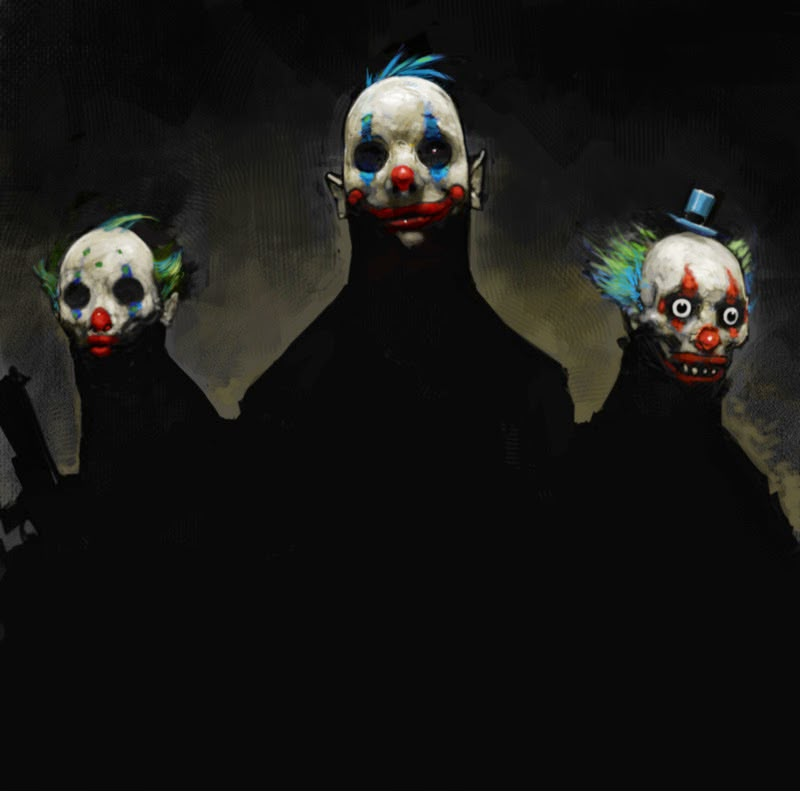
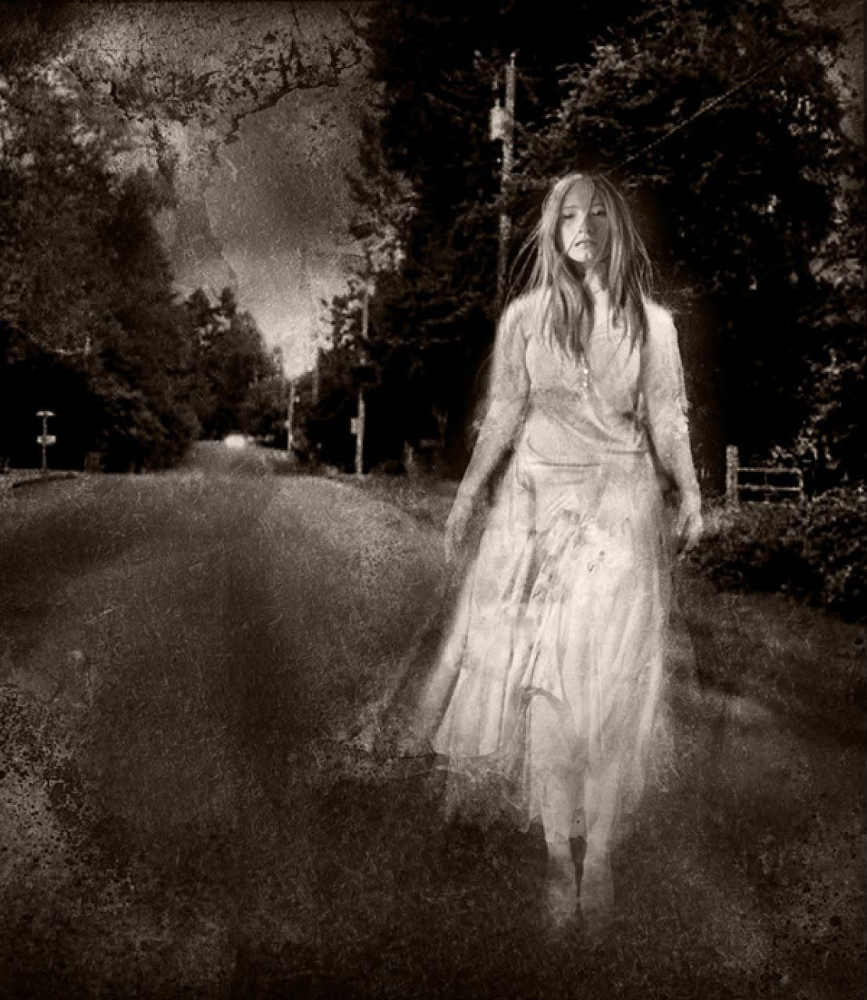
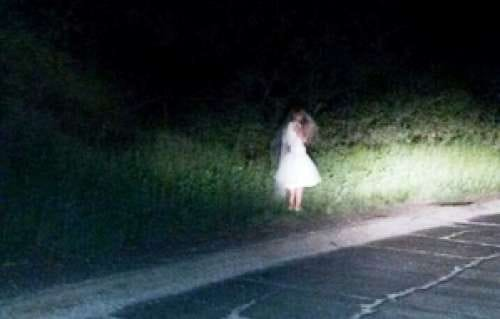
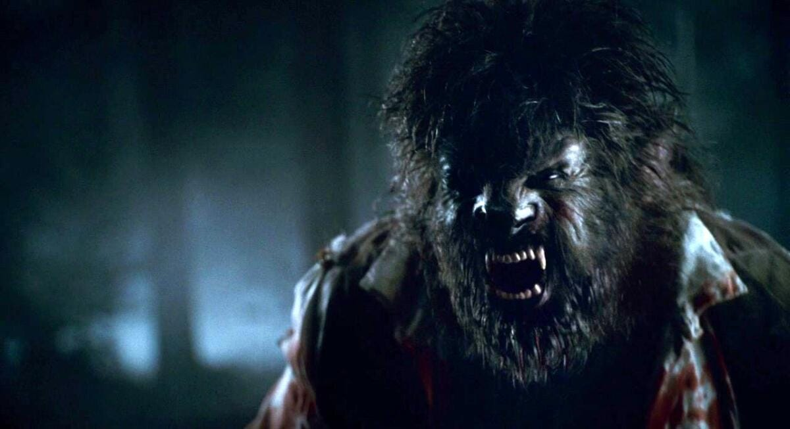
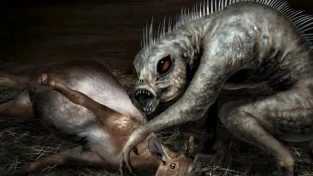
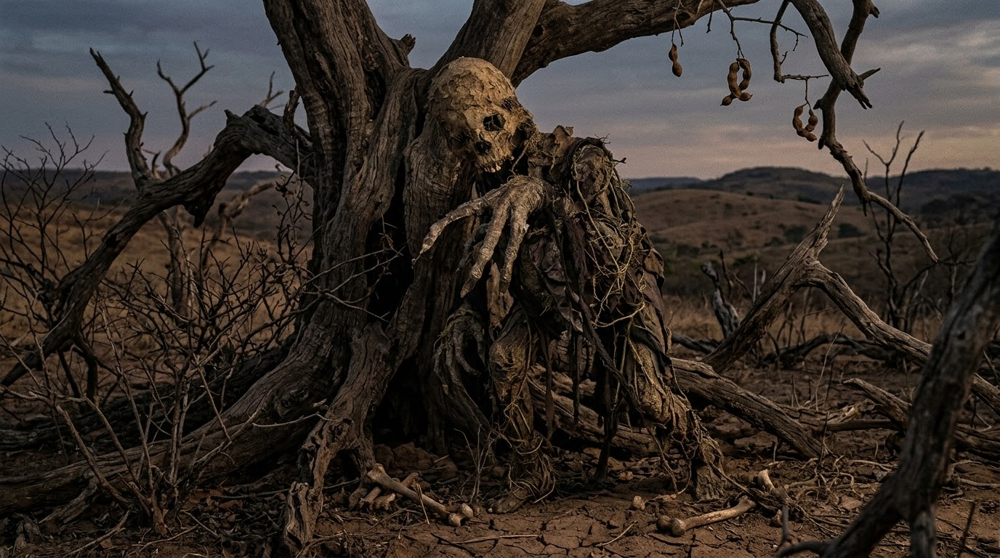
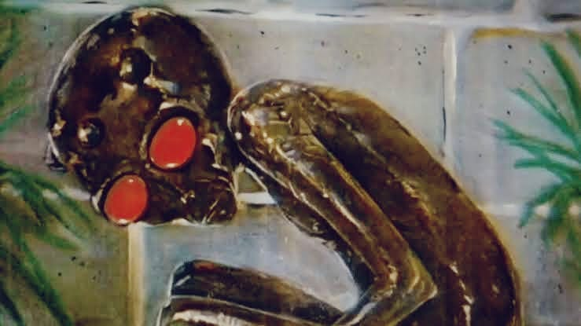

Você já sentiu aquele arrepio na espinha ao passar por uma estrada escura à noite ou ouviu um barulho estranho no quintal e lembrou das velhas histórias que seus avós contavam? As lendas urbanas brasileiras fazem parte do imaginário popular há gerações, misturando o rico folclore brasileiro com relatos assustadores que desafiam a lógica e a ciência. De aparições misteriosas em rodovias a criaturas bizarras que aterrorizam o interior do país, os mitos do Brasil passeiam entre o fascínio e o medo real. Muitas dessas histórias de terror brasileiras nasceram de fatos históricos, mal-entendidos e boatos que ganharam vida própria na mídia e na boca do povo, tornando-se verdadeiros fenômenos culturais. Se você é fã de mistérios, contos de assombração e quer descobrir o que é verdade, o que é exagero e o que é pura ficção por trás dos casos mais famosos do país, veio ao lugar certo. Prepare-se para explorar as origens, os fatos ocultos e os segredos das lendas mais temidas do Brasil!
A Loira do Banheiro é uma das lendas urbanas mais conhecidas do Brasil. A história fala sobre o fantasma de uma jovem loira que aparece em banheiros, principalmente de escolas, depois que alguém realiza determinados rituais, como bater na porta ou chamar seu nome várias vezes. A lenda se popularizou no Brasil durante o século XX, embora existam histórias semelhantes de fantasmas femininos em outros países. Em algumas versões, a jovem teria morrido tragicamente após um acidente no banheiro; em outras, teria sido vítima de algum tipo de violência. Acredita-se que o mito tenha sido influenciado por histórias antigas de fantasmas e pelo medo de crianças em lugares isolados e escuros. Uma curiosidade é que sua aparência e sua história mudam bastante dependendo da região.
A Cobra Grande, também conhecida como Boiúna, é uma antiga lenda da região amazônica, especialmente presente entre comunidades ribeirinhas e povos indígenas. Segundo a história, uma enorme serpente viveria nas profundezas dos rios e seria tão grande que conseguiria virar barcos, provocar grandes ondas e assustar pessoas. Algumas versões dizem que seus olhos brilhavam durante a noite e que ela poderia se transformar em outros seres. A lenda possui origem muito antiga e faz parte das tradições indígenas amazônicas, sendo transmitida oralmente antes mesmo da chegada dos europeus. O mito pode ter sido influenciado pela existência de grandes serpentes, como as sucuris, além dos fenômenos naturais dos rios amazônicos. A palavra Boiúna está associada, em línguas indígenas da região, à ideia de uma grande serpente ou “cobra preta”.

O Homem do Saco é uma lenda usada principalmente para assustar crianças e fazê-las obedecer aos adultos. A história conta que um homem misterioso anda pelas ruas carregando um grande saco e captura crianças que desobedecem aos pais, ficam na rua até tarde ou se afastam de casa. Não existe uma origem exata, pois histórias semelhantes aparecem em diferentes países e existem há séculos, principalmente na Europa. No Brasil, a lenda se tornou bastante popular e foi transmitida principalmente de forma oral. O mito provavelmente servia como uma maneira de ensinar crianças a não falar com estranhos, não sair sozinhas e obedecer aos responsáveis. Existem versões semelhantes em outros países, como o “Hombre del Saco”, conhecido em países de língua espanhola.

A Gangue dos Palhaços é uma lenda urbana mais recente envolvendo pessoas vestidas de palhaço que supostamente perseguiriam, assustariam ou sequestrariam pessoas. Histórias desse tipo ganharam grande repercussão internacional, principalmente durante a chamada “onda dos palhaços” na década de 2010. Os relatos diziam que grupos de pessoas fantasiadas ficavam escondidos em ruas, florestas ou próximos a escolas para assustar quem passava. A popularização dessas histórias foi favorecida pela internet, pelas redes sociais e pelo medo que algumas pessoas têm de palhaços, conhecido como coulrofobia. Em 2016, diversos países tiveram relatos de pessoas fantasiadas de palhaço, mas muitos deles eram trotes, brincadeiras ou boatos que se espalharam pelas redes sociais.

A Boneca da Estrada é uma lenda urbana brasileira que conta histórias sobre uma boneca misteriosa encontrada abandonada em uma estrada, geralmente durante a noite. Segundo algumas versões, uma pessoa encontra a boneca enquanto dirige, decide levá-la consigo e, depois disso, acontecimentos estranhos começam a acontecer. Há relatos em que a boneca desaparece, muda de lugar ou parece apresentar comportamentos sobrenaturais. A lenda não possui uma origem única ou uma época específica, tendo sido transmitida por relatos populares e, mais recentemente, pela internet. O mito pode ter surgido a partir de bonecas realmente abandonadas em estradas, que ganharam histórias sobrenaturais por causa do ambiente escuro, isolado e assustador. Existem várias versões da história, e os acontecimentos mudam de acordo com quem a conta.

Você provavelmente já ouviu alguém jurar que viu uma figura pálida na beira da pista. Ela pede carona, entra no carro em silêncio, dá o endereço de casa e, ao passar na porta do cemitério… desaparece do banco do passageiro. Na versão escolar, ela ganha o nome de Loira do Banheiro e surge após rituais no espelho do colégio. Onde e quando nasceu: Surgiu no Sudeste do Brasil por volta da década de 1910. A verdade por trás da lenda: Longe de ser apenas história de terror, o mito nasceu do reflexo de tragédias reais da época. Casos de feminicídio e histórias polêmicas alimentaram a fama da noiva injustiçada. O resto? Faróis de carros refletindo na neblina das estradas.

Meia-noite de uma sexta-feira de lua cheia na zona rural. Um homem comum se transforma em uma besta coberta de pelos e com dentes afiados que uiva para a lua e ataca o que vir pela frente. No folclore brasileiro, a maldição tem regra clara: o oitavo filho homem de uma sequência de filhas mulheres está destinado a virar bicho na puberdade. Onde e quando nasceu: Trouxemos a lenda da Europa no período colonial (século XVI ao XVIII), mas ela criou raízes fortes no interior do Nordeste e Centro-Oeste. A verdade por trás da lenda: A explicação é pura medicina antiga. Doenças raras como a hipertricose (que faz crescer pelos no corpo todo), a porfiria e até surtos de raiva humana/canina explicavam visualmente o "homem-lobo". Curiosidade: Diz a tradição sertaneja que, para quebrar o encanto, você precisa acertar o bicho com uma bala de prata ou chamá-lo pelo seu nome de batismo enquanto ele estiver transformado.

Se você viveu os anos 90, com certeza sentiu medo dessa criatura. O relato era sempre o mesmo: dezenas de animais de fazenda acordavam mortos no pasto, sem nenhuma gota de sangue no corpo e apenas com dois furos perfeitos no pescoço. A criatura bípede, de olhos vermelhos e garras afiadas, parou o Brasil. Onde e quando nasceu: Surgiu em Porto Rico em 1995 e virou febre no interior de São Paulo, Paraná e Minas Gerais entre 1996 e 1997. A verdade por trás da lenda: Ataques de matilhas de cães selvagens, pumas e raposas com sarna severa (que perdem o pelo e ficam monstruosos), combinados com o sensacionalismo de programas de TV da época. Curiosidade: O pânico foi tão real que programas de auditório e até órgãos do governo enviaram equipes com câmeras para "caçar" o bicho na zona rural paulista.

Nem Deus, nem o Diabo, nem a própria Terra. Conta a lenda que um homem foi tão cruel e violento em vida que, ao morrer, a terra o "cuspiu" da sepultura. O cadáver não apodreceu: virou uma criatura mumificada, seca e murcha que fica grudada em troncos de árvores esperando viajantes para sugar a vida deles. Onde e quando nasceu: Interior de São Paulo e Minas Gerais, durante o século XIX. A verdade por trás da lenda: Funcionava como uma "fábula moralista" violenta. A história era contada para assustar jovens e garantir respeito absoluto aos pais e à religião. Curiosidade: Em várias cidades do interior, se você estiver andando no mato e ouvir um estalo seco em um dia sem vento, o povo antigo diz que é o Corpo-Seco se preparando para dar o bote.

O caso ufológico mais famoso do Brasil. Em janeiro de 1996, três jovens garantiram ter visto uma criatura baixinha, de pele marrom pegajosa, olhos vermelhos gigantes e três protuberâncias na cabeça em um terreno baldio. A partir daí, surgiram relatos de naves caindo e caminhões do Exército isolando a cidade para capturar os alienígenas. Onde e quando nasceu: Varginha, no Sul de Minas Gerais, em 1996. A verdade por trás da lenda: O Inquérito Oficial do Exército concluiu que as meninas viram, na verdade, o "Luizinho", um morador local com graves deficiências físicas e mentais que costumava ficar agachado na lama. A movimentação militar no dia era apenas a manutenção de rotina de comboios. Curiosidade: Varginha não perdeu tempo: virou a "Capital da Ufologia", construiu pontos de ônibus e uma caixa d'água em formato de disco voador e fatura alto com o turismo extraterrestre até hoje.
